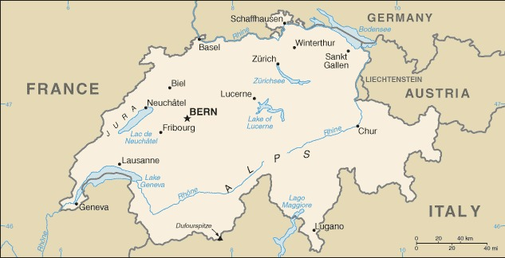

Genel Bilgiler
İsviçre, Orta Avrupa’da yer alan federal bir cumhuriyettir. Başkenti Bern’dir. Yaklaşık 8,7 milyon nüfusa sahiptir. Resmî dilleri Almanca, Fransızca, İtalyanca ve Romanş’tır. Para birimi İsviçre Frangı (CHF)’dır. İsviçre tarafsızlık politikasıyla bilinir ve birçok uluslararası kuruluşun merkezine ev sahipliği yapar.
İsviçre, kuzeyde Almanya, doğuda Avusturya ve Lihtenştayn, güneyde İtalya, batıda Fransa ile çevrilidir. Yüzölçümü yaklaşık 41.285 km²’dir. Ülke çoğunlukla Alp dağları ile kaplıdır; en yüksek noktası 4.634 metre ile Dufourspitze’dir. Ülkenin önemli nehirleri Ren, Rhône ve Aare’dir.
Başkent: Bern
Kıta: Avrupa
Yüzölçümü: 41.285 km²
Nüfus (2025): 8.735.000

Bayrak Anlamı: İsviçre bayrağı kırmızı zemin üzerinde beyaz bir haçtan oluşur. Beyaz haç barışı ve özgürlüğü, kırmızı zemin ise cesareti ve ulusal bağımsızlığı simgeler. Bayrak kare şeklindedir ve İsviçre’nin en bilinen ulusal sembolüdür.
İsviçre Haritası
Ekonomi
İsviçre ekonomisi gelişmiş ve yüksek gelirli bir yapıya sahiptir. Finans ve bankacılık sektörü oldukça güçlüdür; ayrıca sigorta, saat üretimi ve ilaç endüstrisi öne çıkar. Tarım sektörü küçük ölçekte olup süt ürünleri ve çikolata üretimi önemlidir. Turizm Alp dağları ve gölleri ile canlıdır. İsviçre ayrıca teknoloji ve inovasyon alanında da güçlüdür.
| Yıl | İhracat (Milyar $) | İthalat (Milyar $) |
|---|---|---|
| 2019 | 300 | 290 |
| 2020 | 280 | 270 |
| 2021 | 310 | 300 |
| 2022 | 320 | 310 |
| 2023 | 325 | 315 |